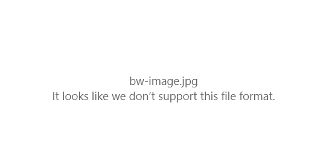
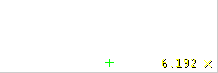

Science + Society
Unraveling
The JPEG
Unraveling
The JPEG
The JPEG

Unraveling
The JPEG
If you’ve ever used the internet, you’ve probably seen a JPEG image. JPEG is a standard for image compression that’s brought us a world where colorful, high quality images can easily be shared. From web pages, to email, to social media and smartphones, it’s used billions of times per day across all of our devices every time we view or send images online. Without JPEG, the web would be a little less colorful, a lot slower, and possibly host a lot less cat pictures.
Despite its ubiquity in our lives, JPEG is often treated as a black box. You might be aware that it’s a lossy compression technique; it throws away data that we’re not likely to notice to reduce file size, but what does that data look like? How does it decide what we will or won’t notice? And is that assumption correct all the time? (Spoiler: it’s not!)
There’s even more mysteries that arise when we look at how JPEG images are stored. If you open a JPEG image in a text editor, you’ll see the raw bytes; the list of numbers that represent this image on your computer. Below is an image and its raw bytes.
Try changing the first 17 to a 1 or 16. Or try changing the first 232 to 252.
Changing this single number somehow alters the entire image, and quite spectacularly so! It’s not too surprising that changing these numbers will change the colors in the image, but certain numbers seem to change, not the color...but the shape? To see what I mean, try changing the second 69 to 251 or greater and look at the top left corner of the image. These checkboard patterns are always hiding in there, no matter what JPEG image you use.
This article will explore how JPEG works by reverse engineering it. You’ll get to unravel each of these mysteries by making changes like this, observing what they do to the image, and gathering clues!
I think learning about JPEG is valuable not just because it’s important to understand the technology we all use everyday, but also because as we peel off each layer of compression we’ll learn about visual perception – what details matter most to our eyes, as well as information theory, and a little bit of linear algebra.
Why does one number change the entire image?
Let’s look at this effect in a simpler image. Here’s a 16x8 image that’s just a black square and a white square. See if you can find the number that changes the whole image without corrupting it.
The first number that has this property is 252. Changing it to 251 changes the black to white and the white to grey. Other values bring out the checkboard patterns.
To figure out why this is happening, a good general technique when reverse engineering is to try and re-invent the thing you’re trying to understand. This is akin to solving a crime by putting yourself in the shoes of the suspect. If you think about where you would have hidden the weapon it might help you find it.
In this case, we know the goal of JPEG is to make the file size smaller – to use less bytes when representing the image. Here’s what the black and white image would look like if we represented it as just a list of the color of every pixel.
Figure of the same as above, except it’s about 16*8*3 = 384 numbers.
That’s a lot more numbers. This is storing the color in 3 numbers (red, green, blue), for every pixel (it’s a 16x8 image, so there’s 16*8 = 128 pixels). But we don’t really need all that much to describe this simple image. Can you think of a way to represent this image with fewer bytes? For example, one easy way is to use 1 number for the color of each pixel instead of 3 since this image is just black and white.
The smallest reasonable representation I could think of is 8 numbers: store the color (3 numbers) followed by how many pixels have this color. That’ll allow us to store each block of solid color in exactly 4 numbers.
Figure of those 4 numbers with the resulting image.
We just made up our own format, and it’s actually better than JPEG (in this one particular case)! If this were a real image, it would probably be worse than just naively storing all the colors. Do you see why?
The reason I said this is the “smallest reasonable representation” is because we could technically store any image, no matter how big, in a single number, by simply declaring that the number 0 represents that particular image. When I say “Mona Lisa”, I’ve just communicated an entire image using just 2 words, but obviously, this won’t work if I want to communicate images you’ve never seen before.
Representing large areas that have the same color with 2 numbers instead of storing the color of every single pixel saves a huge amount of bytes. This is known as Run-length encoding (RLE) and is used in any situation when you have a lot of repeated values next to each other, not just on images. For example, audio files typically have long moments of silence at the beginning or the end, which would benefit from this way of representing them.
You can actually go back and confirm that this is indeed what’s happening. Try scrolling down and changing values closer to the bottom. Notice how as you go down in the list of numbers, changing a value only affects subsequent values!
Why do some changes corrupt the image?
RLE explains why numbers change subsequent colors, but why do some innocuous changes just outright “corrupt” the image? If you haven’t seen this already try changing the very first number in any of the figures above. If you tried to open that edited JPEG image, it might say something like:
This is what it says in the Windows photo app.If these numbers represent colors, we wouldn’t expect this to happen unless we did something like set a color to a negative value or something like that. But as we saw earlier, changing a 17 to 15 suddenly made the browser no longer capable of recognizing it as an image.
This is admittedly the hardest part to reverse engineer without looking up the JPEG standard. As promised, before I explain it I’ll give you a chance to uncover it yourself. The best hint I can give you is that we need to look at the header. Most articles on editing JPEGs will tell you not to touch it since it mostly contains metadata, like how big the image is, how many bytes to expect, etc. so changing those numbers easily makes the image unreadable.
For example, the first two bytes in the body are the “Start of Image” marker. This is what marks a list of numbers a JPEG image, as opposed to a PNG, or a Word document (contrary to what operating systems might have you believe, the file extension really doesn’t matter that much). This is the marker that the browser/photo viewers look for when deciding how to decode these numbers, so if it’s not there, it won’t know to read it as a JPEG. This is one way of corrupting an image.
However, there is a string of special values in the header that we can always safely change, that will always have the most dramatic effect on the image. Look for a “255, 196” pair (you can just CTRL+F this), then skip 19 bytes. The first number after will always have the most dramatic effect on the image, with subsequent numbers having less and less of an effect.
There can be up to four (and at least one) “255, 196” pairs that have different effects.
Body:
Header:
Without these four “255, 196” pairs, and the numbers that follow, it would be practically impossible to decode the JPEG. It would be as if I just made up a new language that was particularly efficient at describing one particular painting. It might be a beautifully concise description, but it wouldn’t make sense to anyone else.
This might sound ridiculous, but these numbers are indeed a dictionary for a made up language-of-sorts unique to this particular image!
Variable Length encoding
The “255, 196” byte pair marks the definition of a Huffman encoding table. It tells us how to read the bytes in the JPEG.
Why would you want to create a unique dictionary for each image like this? Imagine if you had an image, after doing all your compression, the numbers looked like this:
1 1 1 255 1 1These are 6 decimal numbers. In binary, these are stored as:
00000001 00000001 00000001 11111111 00000001 00000001That’s a total of 48 bits. We use 8 bits per number so that we can store numbers up to 255, but that means we’re wasting 7 bits on almost all of our numbers here. Ideally, you’d store every number in as many bits it needs and no more. So it would be:
1 1 1 11111111 1 1This is now only 13 bits. We’ve just made our data over (13/48) 3x as small! That’s like taking a 10 MB image, too big for a web page, and squeezing it into 3 MB, just by removing unnecessary bits, no change to the image quality whatsoever.
There’s one problem though - I deliberately spaced out the numbers when showing it so you’d know where each one starts and ends. But when you’re reading bits in a file, this is what you’d get:
1111111111111These are the 13 bits. Is the first number a 1? Or is it a 11 (a 3 in decimal)? Or is it a 11111111? We need a way to somehow know how many bits to read for each number.
This is a fun problem to try and solve with many creative solutions. For example, you could say you’ll put a stop marker in there, maybe it’s “0”. But then you have to figure out a way to represent “0″! I won’t spoil it, but Huffman encoding is the answer. It is the most efficient way of packing a string of bits without using start/stop markers. There are many good explanations on it, here’s one of my favorite.
As long as we understand that to make sense out of these numbers, we must first translate them based on the Huffman tables, we can keep going. As an example, for the simple image, here’s what the first Huffman table looks like:
Embed Huffman table. This would be cool if done dynamically, so you could drag and drop an image and see its table.
So while the first two numbers look like “X, Y”, to uncover what they really are, we unpack them into their binary bits:
binary bits hereAnd notice that the first sequence is “W” from the table. (We then have to take this and further decode it from another Huffman table, this one not found in the file anywhere, but in the JPEG spec. But this detail isn’t that important right now?)
Doing this for the whole image, we get the following representation:
Figure of image, same as previous, textbox and image, except now it’s all the DCT coefficients.
(Interested readers can see exactly how to perform this step in the source code.)
You might have hoped what we’d have now is finally raw color values, but a few seconds of playing around with the numbers above shows this is not the case. Notice that none of the steps we’ve uncovered so far could have had any data lost or thrown away, they were all lossless compression steps. The defining feature of JPEG is its lossy nature, so there’s bound to be more to the story.
Where do the mysterious checkboard patterns come from?
Despite removing all but the final compression layer, what we have now is still far from a list of colors. We no longer get single numbers that change the whole image, since we’ve removed RLE. Changing numbers should have more predictable results now, since these numbers correspond directly to something, even if it’s not color (as opposed to before, we couldn’t tell where one number started and the other ended because of the variable length encoding).
What is more pronounced though is the checkboard patterns. It’s even more obvious in our simple image:
interactive DCTs of simple image.
This is my favorite part to reverse engineer. There’s a very clear systematic pattern here. Higher numbers are denser patterns, with 0 and 1 being all white and all black respectively. Do you have any guesses on what’s going on here?
It takes a bit of leap to see how this works, so I’ll give you one good hint. Here is one more JPEG images stripped down to what I’ll call its “checkboard numbers”.
interactive DCTs of another simple image chosen such that it has many components, to give you the hint that these patterns are added together to make the image.
Try changing the numbers starting at X, setting them at 0, one by one. Can you see how these patterns represent the image?
Breaking down images
What we’re looking at here is the Discrete Cosine Transforms coefficients. These checkboard patterns are generated by cosine functions, which are them combined together to form the final image. The numbers we’ve got here, the coefficients, control how much of each pattern is represented. There are 64 total patterns.
Here is a popular GIF from Wikipedia that’s often used to show how these are added together to get an image:
We can actually do this ourselves now. Below is that “A” image, and you can selectively remove the patterns that make it up.
If it’s too hard to do this in the raw numbers, we might just have a nicer format/sliders here. The point is that this will be the first viz I’ve ever seen that lets me really understand this popular animation.
You’ll hear them called “waves”, because this checkboard pattern is really a 3D plot, where the color represents the “height”.
Side by side of the checkboard pattern, next to its 3D plot, and the equation generating it, which you can change, so you really understand why it’s a ‘wave’.
This seems a bit like magic. These cosine waves are not generated for each image. Every possible image that has ever existed, or will ever existed, is a combination of these, specific, 64 patterns. This is known as a basis in Linear Algebra.
Why represent images this way?
It’s pretty cool to know you can represent an image as a sum of cosine waves instead of a list of color values, but you should be asking yourself why anyone want to represent things in this esoteric way. Remember that our goal is to reduce the number of bytes needed to represent images, and it takes just as many bytes to represent images as a sum of waves as it does to represent them as a list of colors.
We’re not strict about keeping the image in its original form. If we can throw away some detail to make the image significantly smaller, that’s great. The problem with our list-of-colors representation is that throwing away bytes just causes us to lose those pixels, we don’t get a lower quality version of the same image.
So while it takes the same amount of information to store the image in both ways, the DCT way makes it easier to find things to throw away that won’t change the image too much.
This is exactly the same reason JPEG uses YCbCr instead of RGB. To represent the color of any given pixel, it takes the 3 numbers, whether you’re using RGB or YCbCr, but if you were forced to throw away 2 of those numbers, the image with just Y would look much better than the image with R, G, or B (or Cb or Cr).
Tossing away information
Let’s see what this looks like! Let’s do some vision experiments. Here is an image with all of its DCT coefficients. Try removing each to see how many you can get to 0 and still get a recognizable image.
_._
What you just did here is what JPEG does, to every 64x64 pixel block in the image!
<Point out that this way of representing data doesn’t just apply to images. It works on anything! This is used in audio to remove noise for example>
Chroma Sub-sampling
We could stop here, but we’ll be leaving one of the biggest mysteries on the table! Why YCbCr as opposed to RGB? It’s because we can downsample color, separately from the image.
This is a peculiar idea because, what is the image if not a collection of color? Just like there are many ways to represent numbers, we can represent colors in different ways too. With RGB, you add these colors together. With YCbCr, you have the luminance, and then two color components.
Show a 7 figure diagram. 1 image, and then 3 images for its RGB components separately. Then the 3 images for its YCbCr components separately.
We just so happen to be more sensitive to luminance. Possibly because of the way our vision evolved. Anyone will tell you that JPEG downsamples only the color because otherwise image would look bad, but I was very curious, what happens if we downsample luminance instead?
Dynamic figure of an image with sliders. I want to be able to see what happens when I downsample any individual component. And do this for RGB as well, since no JPEG editing program lets you do this.
Discrete cosine transform for the whole image (optional/addendum)
JPEG only applies the DCT to the image in 64x64 blocks. This is why most animations of it you’ll see are on tiny images.
There’s absolutely nothing stopping us from doing this to the whole image! JPEG does it this way both for computationally efficiency and because at high compression rates, the whole image averaged out looks like a blob. But 64x64 blocks averaged out still looks recognizable.
But DCT is supposed to let you represent any image, using these coefficients, so what does this look like? I wanted to see it. Here’s a sandbox for you to try this out, on any image you like!
Interactive DCT for the whole image. If it can’t be done in real time, post pictures of it here and link to the GitHub wit instructions on how to do it.